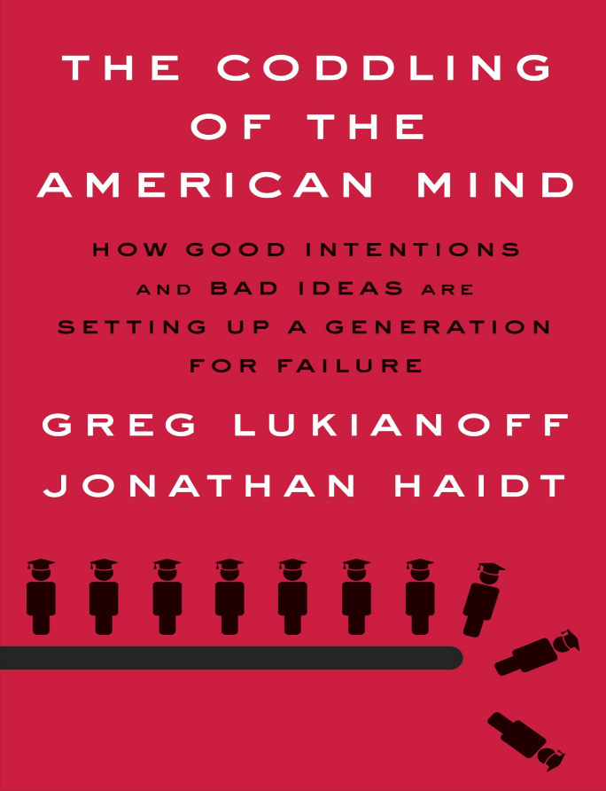

Writing assignment # 1

In Chapter 2 of “The Coddling of The American Mind”, authors Greg Lukianoff and Jonathan Haidt make a point about Antifragility. In the article, Nassim Nicholas Taleb, professor of risk engineering at New York University, shared his views and perspectives on Antifragility. <1> In his 2007 best seller, “The Black Swan,” Taleb argues that calculating risk based on experience is the wrong way to think about risk. He pointed out that life is unpredictable, and no one knows when the next accident will happen. In his later book, Antifragility, he explained how systems and people, like the immune system, become stronger in response, able to survive the inevitable risks. And he also states that we need to distinguish between fragile, resilient, and antifragile, and he used china teacups and plastic cups as examples. Our anti-vulnerability systems become rigid and inefficient when we don’t have the stress and challenges we need to learn, adapt, and grow. This is the tragedy of modern times: like overprotective parents, those who try to help us often hurt us the most. Taleb uses a poetic example, "You want to be the fire and wish for the wind.", to advise that the wind will extinguish the candle and ignite the fire. Do not turn a child into a candle. <2> Because accidents, risks, and stress are an inevitable part of life, growing and learning from these experiences is what children need most. <3> Nowadays, most parents do not prepare their children to face the risks and challenges. They try to clear all the difficulties along the way, not realizing that one day, the children will leave the umbrella of home. By the time children are faced with independent living, too little independent experience can leave them at a loss. <4>
I quite agree with the author’s points. Parents’ love for their children is understandable, but excessive involvement in children’s life, study, and friendship will affect children’s independent growth, and because parents are overprotective, children will feel inferior and afraid of challenges, resulting in their lack of experience. <5> In addition, there are many examples of overprotection in our lives, such as fear of unsanitary ground, always holding the child in my arms, not letting the child play, fear of soiling his clothes, forbidding the child to take off his shoes on the beach, fear of broken glass Injure their feet and teach children not to talk to strangers. Moreover, excessive protection of children is, in essence, excessive restrictions on children. Therefore, what should parents do? I have summarized some ways that I think are good to raise children.
- Let children make their own decisions and give them the chance to try and make mistakes.
- Put yourself in the child’s shoes.
- Let it go and give your child a free environment to grow up in.
- Let children learn to protect themselves. In China, there is a proverb, “Failure is the mother of success”. If a person has not experienced failure, he cannot succeed. If today’s kids have never experienced heavy rain, they won’t be able to see a rainbow either.
- Make my sentence clearer.
- Fixed citation errors.
- Make my sentence clearer.
- Make my sentence clearer.
- Make my sentence clearer.